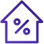

משכנתאות
היום כבר כולם יודעים – לא לוקחים משכנתא ללא ליווי של איש מקצוע !
עומדים בפני לקיחת משכנתא חדשה ?
יש לכם משכנתא קיימת ורוצים לבדוק עבורה מחזור ?
משפחות שליוויתי בתהליך לקיחת משכנתא חדשה או מחזור משכנתא קיימת הצליחו להשיג משכנתאות בתנאים מצוינים, משכנתאות בהתאמה אישית לצרכים שלהן והצליחו להשיג חיסכון של עשרות ומאות אלפי שקלים בעלויות המשכנתא
לקבלת ייעוץ
יש לכם משכנתא קיימת ורוצים לבדוק עבורה מחזור ?
משפחות שליוויתי בתהליך לקיחת משכנתא חדשה או מחזור משכנתא קיימת הצליחו להשיג משכנתאות בתנאים מצוינים, משכנתאות בהתאמה אישית לצרכים שלהן והצליחו להשיג חיסכון של עשרות ומאות אלפי שקלים בעלויות המשכנתא
שירות בתחומים הבאים:
ככל שעובר הזמן, אתם עומדים ביותר ויותר קריטריונים שלא עמדתם בהם בזמן לקיחת המשכנתא, אך המשכנתא
שלכם ממשיכה להתנהל לפי התנאים הישנים שלכם – ועל זה אתם משלמים המון כסף, בלשון המעטה.

כושר החזר
קריטריון זה מתאר את החלק של התשלום החודשי על המשכנתא מתוך סך ההכנסה החודשית. ההכנסות
שלכם עלו בשנים האחרונות? כושר ההחזר שלכם עלה בהתאם ואתם יכולים כעת לקבל תנאים טובים יותר
על המשכנתא שלכם.
תקופת המשכנתא
ככל שהמשכנתא ארוכה יותר, כך הריביות גבוהות יותר. בואו נניח ולקחתם מסלול מסוים במשכנתא
(שנלקחה לפני 5 שנים) למשך 25 שנים, כלומר, כרגע נשארו לכם 20 שנה במסלול זה. הריבית
שקיבלנו עבור מסלול זה היא ריבית ל-25 שנים. אם תמחזרו היום את המשכנתא (ובהנחה שתרצו לשמור
על אותה התקופה שנותרה), תוכלו לקחת את אותו מסלול בתנאים של 20 שנים שהם תנאים טובים יותר.
בפועל, ישנו סיכוי שבמחזור המשכנתא תוכלו אף לקצר את התקופות וכך לקבל תנאים עוד יותר
טובים.
אחוז המימון של המשכנתא
כלי עיקרי בקביעת הריביות שלכם במשכנתא. אחוז המימון מתאר כמה אחוז מעלות הבית לקחת
כמשכנתא. ככל שאחוז המימון גבוה יותר, כך הריביות גבוהות יותר. עם זאת, ככל שאנו נעים על
ציר הזמן בין היום בו לקחנו את המשכנתא לבין הזמן הנוכחי, קורים שני דברים שמשפרים את מצבכם
באחוז המימון. הראשון, סכום המשכנתא שלכם (יתרת הקרן) יורד, והשני, שווי הבית שלכם כנראה
עלה.
אלו הן רק 3 דוגמאות, יש עוד המון קריטריונים שהופכים את מחזור המשכנתא לכדאי ביותר. במחזור המשכנתא ניתן להגיע לחיסכון של עד מאות אלפי שקלים (!), תוך כדי קיצור המשכנתא ב-5 שנים ואף יותר. אמנם שנת 2022 עבור רובנו היא כנראה לא שנת מחזור המשכנתא, אך תמיד שווה לבדוק זאת – הבדיקה ללא עלות.
רוצים לבדוק את המשכנתא שלכם וכדאיות המחזור שלה? תנו לי לבדוק זאת עבורכם – הבדיקה ללא עלות.
חזון במשכנתאות
החזון שלנו הוא לאפשר לכל נוטל משכנתא בישראל איכות חיים גבוהה מהבחינה האישית והכלכלית
על ידי התאמת המשכנתא לצרכים וליכולת שלו כיום ובעתידנשמח ללוות אתכם צעד אחר צעד,
למשכנתא מצוינת שתעניק לכם כלי לצמיחה כלכלית במקום נטל כלכלי לאורך שנים.
קרא עוד
למה יועץ משכנתאות כל כך חשוב ?
יועץ משכנתאות טוב ומקצועי יידע לסלול עבורכם את הדרך הבטוחה, המהירה, הקלה והחסכונית
ביותר לקבלת משכנתא לצורך רכישת נכס
ליווי על ידי יועץ משכנתאות מקצועי בתהליך לקיחת משכנתא חדשה יכול להביא לחיסכון של
מאות אלפי שקלים בעלות המשכנתא (ריבית והצמדה)
קרא עוד
@include('partials/articles.html')